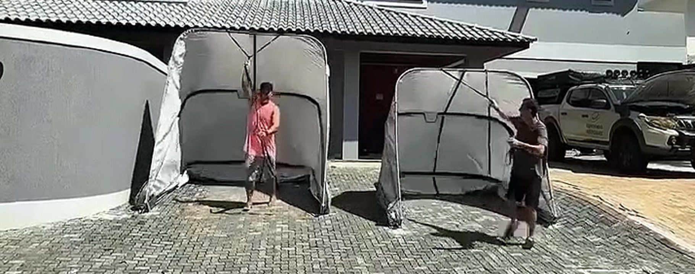
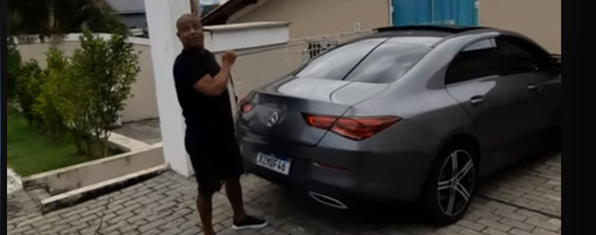

André Marques
André Marques apresenta a Garagem Retrátil IGLU-CAR e destaca sua proteção contra sol, chuva e maresia.
Mantenha seu veículo limpo, protegido e valorizado todos os dias. Evite gastos com lavagens, polimentos, pintura e reparos causados pela exposição ao tempo.
Veja depoimentos, reportagens e demonstrações reais.

André Marques apresenta a Garagem Retrátil IGLU-CAR e destaca sua proteção contra sol, chuva e maresia.
Participação da IGLU-CAR no programa AutoEsporte, exibido em 01/11/2020.

Veja o que Marcelinho Carioca falou sobre a IGLU-CAR Garagens.
Paulinho Gogó fala sobre a IGLU-CAR e sua experiência com a garagem retrátil.
Conheça a garagem do Zucatelli e veja a IGLU-CAR em uso no dia a dia.
A IGLU-CAR protege contra os principais fatores que reduzem a vida útil e a aparência do veículo.
Assista a testes reais que demonstram a eficiência da IGLU-CAR nas condições mais severas.
Veja a IGLU-CAR protegendo o veículo durante uma forte tempestade.
Veja como a IGLU-CAR protege veículos das baixas temperaturas em Curitiba.
Assista ao teste da IGLU-CAR durante uma chuva de granizo.
Veja o teste que comprova a impermeabilidade da cobertura IGLU-CAR.
Mais de 700 vídeos de clientes satisfeitos comprovam a eficiência da IGLU-CAR em veículos de diferentes categorias por todo o Brasil.
Veja a experiência deste proprietário com a IGLU-CAR.
Depoimento de cliente utilizando a IGLU-CAR.
Eros Prado conta como a IGLU-CAR protegeu seu veículo.
Experiência real de um cliente.
Veja a IGLU-CAR protegendo um Buggy.
Mais um cliente satisfeito com a IGLU-CAR.
Proteção para um veículo clássico.
Veja a IGLU-CAR em uso neste modelo.
Veja a experiência do proprietário do Volvo XC40 com a IGLU-CAR.
Quer ver ainda mais exemplos? A IGLU-CAR possui mais de 700 vídeos de clientes satisfeitos publicados em seu canal oficial no YouTube.
Veja centenas de outros casos reais no canal oficial da IGLU-CAR no YouTube, com mais de 700 vídeos publicados.
A exposição diária ao tempo pode gerar gastos que se acumulam ao longo dos anos. Veja alguns exemplos comuns.
Entre R$ 800 e R$ 2.000 por ano.
Entre R$ 600 e R$ 2.000.
Entre R$ 800 e R$ 2.500.
Entre R$ 1.000 e R$ 6.000.
Pode ultrapassar R$ 15.000.
Reparos entre R$ 500 e R$ 5.000.
Acelera a oxidação e reduz a vida útil da pintura.
Podem causar manchas permanentes na pintura.
A prevenção normalmente custa muito menos do que recuperar um veículo danificado pela exposição diária.
Menor exposição às intempéries.
Reduz poeira e sujeira.
Menos gastos com estética e reparos.
Montagem e utilização simples.
Estrutura desenvolvida para uso contínuo.
Ajuda a preservar a aparência do veículo.
Resposta em vídeo.
Resposta em vídeo.
Resposta em vídeo.
Resposta em vídeo.
Resposta em vídeo.
Resposta em vídeo.
Resposta em vídeo.
Resposta em vídeo.
Digite o modelo do veículo para acessar a página correspondente.